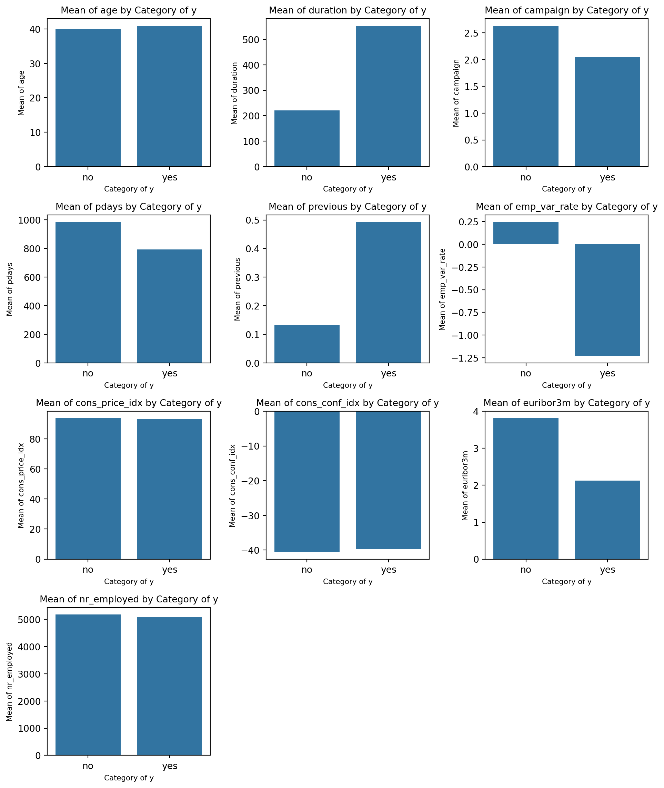
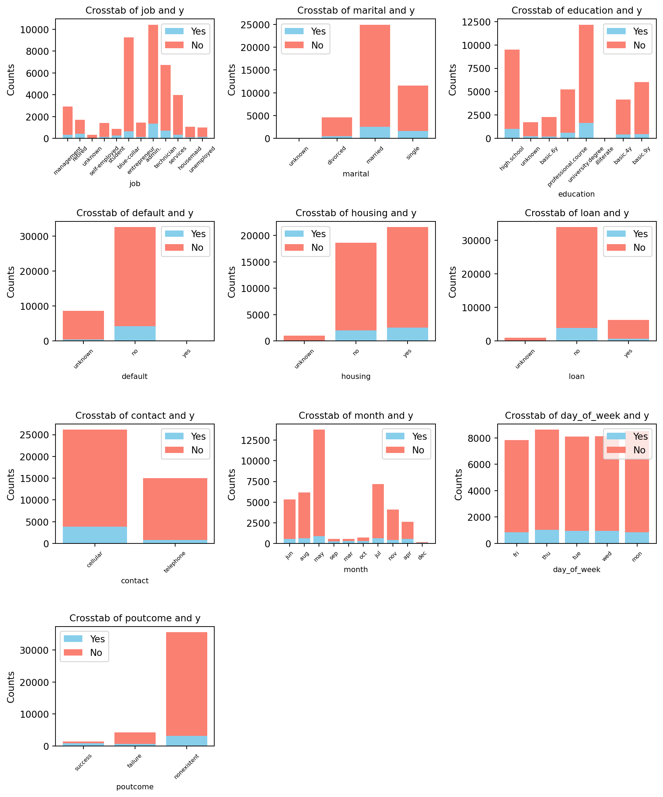
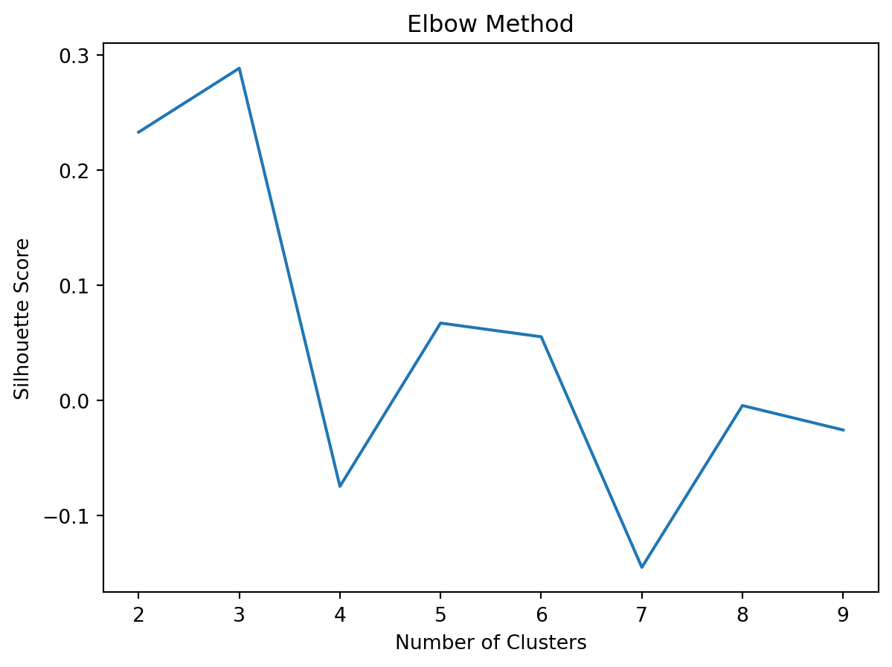

+---+---------+-------+-----------+-------+-------+----+---------+-----+-----------+--------+--------+-----+--------+-----------+------------+--------------+-------------+---------+-----------+---+
|age| job|marital| education|default|housing|loan| contact|month|day_of_week|duration|campaign|pdays|previous| poutcome|emp.var.rate|cons.price.idx|cons.conf.idx|euribor3m|nr.employed| y|
+---+---------+-------+-----------+-------+-------+----+---------+-----+-----------+--------+--------+-----+--------+-----------+------------+--------------+-------------+---------+-----------+---+
| 56|housemaid|married| basic.4y| no| no| no|telephone| may| mon| 261| 1| 999| 0|nonexistent| 1.1| 93.994| -36.4| 4.857| 5191.0| no|
| 57| services|married|high.school|unknown| no| no|telephone| may| mon| 149| 1| 999| 0|nonexistent| 1.1| 93.994| -36.4| 4.857| 5191.0| no|
| 37| services|married|high.school| no| yes| no|telephone| may| mon| 226| 1| 999| 0|nonexistent| 1.1| 93.994| -36.4| 4.857| 5191.0| no|
| 40| admin.|married| basic.6y| no| no| no|telephone| may| mon| 151| 1| 999| 0|nonexistent| 1.1| 93.994| -36.4| 4.857| 5191.0| no|
| 56| services|married|high.school| no| no| yes|telephone| may| mon| 307| 1| 999| 0|nonexistent| 1.1| 93.994| -36.4| 4.857| 5191.0| no|
+---+---------+-------+-----------+-------+-------+----+---------+-----+-----------+--------+--------+-----+--------+-----------+------------+--------------+-------------+---------+-----------+---+
only showing top 5 rows
Bank Term Deposit Subscription Prediction
Introduction
The objective of this project is to develop a predictive model for XYZ Bank to identify clients who are likely to subscribe to a term deposit. The analysis is based on data from the bank’s direct marketing campaigns, which include client demographics, campaign details, and economic indicators.
Her’s a quick look of the dataset that we are working with:
A quick analysis of the dataset shows that there are some columns in the dataset with “.” that makes the EDA difficult as the column names are interpreted as attributes. So before we get to the EDA of data for descriptive analysis we clean up the column names with the code below.
Code
for column in df.columns:
df = df.withColumnRenamed(column, column.replace('.', '_'))Exploratory Data Analysis (EDA) Findings
The starting point of EDA is to understand the variable types and cardinality. We did this using Pyspark along with identifying variables with null values:
Code
print("Numeric Features:", numerical_columns)
print("Categorical Features:", categorical_columns)
print("Total numeric features:", len(numerical_columns))
print("Total categorical features:", len(categorical_columns))
# Null values for the dataset
null_values = {column: df.filter(df[column].isNull()).count() for column in df.columns}
print("Null Values:", null_values)
# Cardinality of all variables
cardinality = {column: df.select(column).distinct().count() for column in categorical_columns}
print("Cardinality:", cardinality)Numeric Features: ['age', 'duration', 'campaign', 'pdays', 'previous', 'emp_var_rate', 'cons_price_idx', 'cons_conf_idx', 'euribor3m', 'nr_employed']
Categorical Features: ['job', 'marital', 'education', 'default', 'housing', 'loan', 'contact', 'month', 'day_of_week', 'poutcome', 'y']
Total numeric features: 10
Total categorical features: 11
Null Values: {'age': 0, 'job': 0, 'marital': 0, 'education': 0, 'default': 0, 'housing': 0, 'loan': 0, 'contact': 0, 'month': 0, 'day_of_week': 0, 'duration': 0, 'campaign': 0, 'pdays': 0, 'previous': 0, 'poutcome': 0, 'emp_var_rate': 0, 'cons_price_idx': 0, 'cons_conf_idx': 0, 'euribor3m': 0, 'nr_employed': 0, 'y': 0}
Cardinality: {'job': 12, 'marital': 4, 'education': 8, 'default': 3, 'housing': 3, 'loan': 3, 'contact': 2, 'month': 10, 'day_of_week': 5, 'poutcome': 3, 'y': 2}Through EDA, we observed the following:
- The dataset consists of diverse demographic and economic features, crucial for understanding customer behavior.
- There are a total of 10 numeric features including
- Age
- Duration: last contact duration, in seconds
- Campaign: number of contacts performed during this campaign and for this client
- pdays: number of days that passed by after the client was last contacted from a previous campaign
- previous: number of contacts performed before this campaign and for this client
- emp_var_rate: employment variation rate
- cons_price_idx: consumer price index
- cons_conf_idx: consumer confidence index
- euribor3m: euribor 3 month rate
- nr_employed: number of employees
- There are a total of 11 categorical features including:
- job: type of job
- marital: marital status
- Education
- default: has credit in default?
- housing: has housing loan?
- loan: has personal loan?
- contact: contact communication type
- month: last contact month of year
- day_of_week: last contact day of the week
- poutcome: outcome of the previous marketing campaign
- y: client subscribed or not?
- No missing values were detected in numerical columns, however null values are coded as “non-existent” or “unknowns” in some of the categorical columns which can later be endoded as is.
- Cardinality shows number of disctinct values in the categorical variables. Job has the highest number of distincts at 12 followed by month with 10 followed by education with 8.
Following output shows the basic summary statistics for all the variables in the dataset:
Code
df.describe().show()23/11/29 19:05:23 WARN SparkStringUtils: Truncated the string representation of a plan since it was too large. This behavior can be adjusted by setting 'spark.sql.debug.maxToStringFields'.
[Stage 132:> (0 + 2) / 2][Stage 132:============================> (1 + 1) / 2] +-------+------------------+-------+--------+---------+-------+-------+-----+---------+-----+-----------+------------------+-----------------+-----------------+-------------------+--------+-------------------+------------------+-------------------+------------------+-----------------+-----+
|summary| age| job| marital|education|default|housing| loan| contact|month|day_of_week| duration| campaign| pdays| previous|poutcome| emp_var_rate| cons_price_idx| cons_conf_idx| euribor3m| nr_employed| y|
+-------+------------------+-------+--------+---------+-------+-------+-----+---------+-----+-----------+------------------+-----------------+-----------------+-------------------+--------+-------------------+------------------+-------------------+------------------+-----------------+-----+
| count| 41188| 41188| 41188| 41188| 41188| 41188|41188| 41188|41188| 41188| 41188| 41188| 41188| 41188| 41188| 41188| 41188| 41188| 41188| 41188|41188|
| mean| 40.02406040594348| NULL| NULL| NULL| NULL| NULL| NULL| NULL| NULL| NULL| 258.2850101971448|2.567592502670681|962.4754540157328|0.17296299893172767| NULL|0.08188550063178966| 93.5756643682899|-40.502600271918276| 3.621290812858533|5167.035910943957| NULL|
| stddev|10.421249980934043| NULL| NULL| NULL| NULL| NULL| NULL| NULL| NULL| NULL|259.27924883646455|2.770013542902331| 186.910907344741|0.49490107983928927| NULL| 1.57095974051703|0.5788400489540823| 4.628197856174573|1.7344474048512595|72.25152766826338| NULL|
| min| 17| admin.|divorced| basic.4y| no| no| no| cellular| apr| fri| 0| 1| 0| 0| failure| -3.4| 92.201| -50.8| 0.634| 4963.6| no|
| max| 98|unknown| unknown| unknown| yes| yes| yes|telephone| sep| wed| 4918| 56| 999| 7| success| 1.4| 94.767| -26.9| 5.045| 5228.1| yes|
+-------+------------------+-------+--------+---------+-------+-------+-----+---------+-----+-----------+------------------+-----------------+-----------------+-------------------+--------+-------------------+------------------+-------------------+------------------+-----------------+-----+
One of the main things that stands out in this summary statistic is that the maximum pdays is 999 which is essentially a placeholder for clients not contacted. Since this large number can affect the distribution of the data in the column, we replace it with -1 as an indicator no contact.
As the next step we wanted to visualise the realtionship of numerical columns with our target to see if there is any considerable difference among variable values correspoding to the two outcomes.
Code
import matplotlib.pyplot as plt
import seaborn as sns
import math
# Determine the number of rows needed
num_plots = len(numerical_columns)
num_cols = 3
num_rows = math.ceil(num_plots / num_cols)
plt.figure(figsize=(10, 3 * num_rows))
# For each numerical feature
for i, col_name in enumerate(numerical_columns, 1):
plt.subplot(num_rows, num_cols, i)
result = df.groupBy('y').agg({col_name: 'mean'}).collect()
categories = [row['y'] for row in result]
means = [row[f'avg({col_name})'] for row in result]
sns.barplot(x=categories, y=means)
plt.xlabel('Category of y', fontsize=8)
plt.ylabel(f'Mean of {col_name}', fontsize=8)
plt.title(f'Mean of {col_name} by Category of y', fontsize=10)
plt.tight_layout()
plt.show()
Insights: We can see that mean value of “duration” variable is considerably different for people who buy the subscription versus who don’t. Similarly, campaign, pdays, previous, emp_var_rate, euribor3m seems to have significantly different mean values based on the outcome of the subscription. These variables can eventually become good candidates for predicting variables for our outcome.
Similarly, we make a crosstab visualisation for the categorical variables in the dataset to see if there are values for a variable that have standing out associations with our target variable.
Code
import matplotlib.pyplot as plt
max_plots = 15
selected_categorical_columns = [col for col in df.columns if col not in numerical_columns and col != 'y'][:max_plots]
# Define the layout of the subplots
num_cols = 3 # Number of columns in the subplot grid
num_rows = math.ceil(len(selected_categorical_columns) / num_cols) # Number of rows needed
plt.figure(figsize=(10, 3 * num_rows))
# For each selected categorical feature
for i, col_name in enumerate(selected_categorical_columns, 1):
plt.subplot(num_rows, num_cols, i)
crosstab_result = df.stat.crosstab(col_name, 'y').collect()
categories = [row[f'{col_name}_y'] for row in crosstab_result]
counts_yes = [row['yes'] for row in crosstab_result]
counts_no = [row['no'] for row in crosstab_result]
plt.bar(categories, counts_yes, label='Yes', color='skyblue')
plt.bar(categories, counts_no, bottom=counts_yes, label='No', color='salmon')
plt.xlabel(col_name, fontsize=8)
plt.ylabel('Counts')
plt.title(f'Crosstab of {col_name} and y', fontsize=10)
plt.legend()
plt.xticks(rotation=45, fontsize=6)
plt.tight_layout()
plt.show()23/11/29 19:05:28 WARN GarbageCollectionMetrics: To enable non-built-in garbage collector(s) List(G1 Concurrent GC), users should configure it(them) to spark.eventLog.gcMetrics.youngGenerationGarbageCollectors or spark.eventLog.gcMetrics.oldGenerationGarbageCollectors
Insights:
- We see that people with no housing information never had subscribed for a term deposit.
- People will cellular connections subscribed for terms deposit more (as a % of total)
- People with subscribed usually had high school or higher education
- People with no history of loan default subscribed for term loan over people with loan default history.
Other variables might also have predicting power however based on the EDA, different means of the variables based on the outcome tells that these variables could be signifiacnt in explaining the outcome.
Collinearity:
Many predicitve models assume that the variables predicting the outcome should not be highly colinear. So as a check we perform collinearity on all combination of variables and exclude the one of the two variables as it provides no additional information in predicting the outcome. The threshold for excluding the variable was set at +-0.8
# List to store variables to be excluded
exclude_columns = []
# Calculate pairwise correlations and identify high correlations
for i in range(len(numerical_columns)):
for j in range(i+1, len(numerical_columns)):
col1 = numerical_columns[i]
col2 = numerical_columns[j]
correlation = df.select(F.corr(col(col1), col(col2)).alias('correlation')).collect()[0]['correlation']
# Check if correlation is higher than the threshold
if abs(correlation) > 0.8:
print(f"High correlation ({correlation}) between {col1} and {col2}")
# Add to exclude list (here we choose col2, but you can choose based on criteria)
exclude_columns.append(col2)
# Remove duplicates from the exclude list
exclude_columns = list(set(exclude_columns))
print(f"Columns to drop: {exclude_columns}")High correlation (0.9722446711516146) between emp_var_rate and euribor3m
High correlation (0.9069701012560588) between emp_var_rate and nr_employed
High correlation (0.9451544313982699) between euribor3m and nr_employed
Columns to drop: ['nr_employed', 'euribor3m']Data Cleaning & Preprocessing
Data preprocessing involved:
- Exluding variables with more than +-0.8 of Pearson correlation
# Updated columns list
final_columns = [col for col in df.columns if col not in exclude_columns]
# New DataFrame with excluded columns
df = df.select(*final_columns)- Replace 999 in pdays with -1 as flag value close to the actual values of the variable
# Create a new binary column indicating whether the client was previously contacted
df = df.withColumn('previously_contacted', F.when(df['pdays'] == 999, 0).otherwise(1))
# replace value
df = df.withColumn('pdays', F.when(df['pdays'] == 999, F.lit(-1)).otherwise(df['pdays']))- Encoding categorical variables to prepare them for the machine learning models.
# Target column
target_column = 'y'
# Convert target column to numeric
label_indexer = StringIndexer(inputCol=target_column, outputCol="label").fit(df)
df = label_indexer.transform(df)
df = df.drop('y')
# Remove target column from numerical columns if present
if target_column in categorical_columns:
categorical_columns.remove(target_column)
# Process categorical columns
indexers = [StringIndexer(inputCol=column, outputCol=column+"_index").fit(df) for column in categorical_columns]
encoder = OneHotEncoder(inputCols=[indexer.getOutputCol() for indexer in indexers], outputCols=[col+"_encoded" for col in categorical_columns])
# Assemble features
assembled_inputs = [c+"_encoded" for c in categorical_columns] + numerical_columns
assembler = VectorAssembler(inputCols=assembled_inputs, outputCol='features')Analysis: The preprocessing steps are critical in transforming raw data into a format accepted by pyspark, suitable for modeling, ensuring accuracy in predictions.
Model Training and Selection
We experimented with several models with all the variables as a starting point. There are several variables which can be filtered out before we get to modelling but we wanted to see if we have acceptable performance of the model with all the variables and if necessary we will then weed out variables that does not improve model performance. We made a pipeline that will run 4 models and print out confusion matrix and AUC for each. Following models were run using pySpark mllib library.
- Logistic Regression: Provided a baseline for performance
- Decision tree classifier
- Random Forest
- Gradient Boosted trees
Code
from pyspark.mllib.evaluation import MulticlassMetrics
from pyspark.sql.functions import col
model_performance = []
# Model building
train, test = df.randomSplit([0.7, 0.3], seed=42)
# Define different classifiers
classifiers = [
LogisticRegression(featuresCol='features', labelCol='label'),
RandomForestClassifier(featuresCol='features', labelCol='label'),
GBTClassifier(featuresCol='features', labelCol='label'),
DecisionTreeClassifier(featuresCol='features', labelCol='label')
]
for classifier in classifiers:
# Create Pipeline
pipeline = Pipeline(stages=indexers + [encoder, assembler, classifier])
# Train model
model = pipeline.fit(train)
# Make predictions
predictions = model.transform(test)
# Evaluate model
evaluator = BinaryClassificationEvaluator(labelCol='label', metricName="accuracy")
auc = evaluator.evaluate(predictions, {evaluator.metricName: "areaUnderROC"})
print(f"AUC of the {classifier.__class__.__name__} is {auc:.3f}")
model_performance.append((classifier.__class__.__name__, auc))
# Confusion Matrix
preds_and_labels = predictions.select(['prediction', 'label']).withColumn('label', col('label').cast(FloatType()))
preds_and_labels = preds_and_labels.select(['prediction', 'label'])
metrics = MulticlassMetrics(preds_and_labels.rdd.map(tuple))
print(f'Confusion Matrix for {classifier.__class__.__name__}:')
print(metrics.confusionMatrix().toArray())
print('\n')
# Sort models based on AUC and then runtime
model_performance.sort(key=lambda x: (-x[1]))
# Champion Model
champion_model_name, champion_model_auc = model_performance[0]
print(f"Champion Model: {champion_model_name} with AUC: {champion_model_auc} ") [Stage 473:> (0 + 2) / 2][Stage 473:============================> (1 + 1) / 2] 23/11/29 19:05:42 WARN InstanceBuilder: Failed to load implementation from:dev.ludovic.netlib.blas.JNIBLAS
23/11/29 19:05:42 WARN InstanceBuilder: Failed to load implementation from:dev.ludovic.netlib.blas.VectorBLAS
[Stage 592:> (0 + 1) / 1] AUC of the LogisticRegression is 0.935
Confusion Matrix for LogisticRegression:
[[10614. 288.]
[ 763. 602.]]
AUC of the RandomForestClassifier is 0.929
Confusion Matrix for RandomForestClassifier:
[[10823. 79.]
[ 1120. 245.]]
AUC of the GBTClassifier is 0.944
Confusion Matrix for GBTClassifier:
[[10495. 407.]
[ 652. 713.]]
AUC of the DecisionTreeClassifier is 0.180
Confusion Matrix for DecisionTreeClassifier:
[[10598. 304.]
[ 804. 561.]]
Champion Model: GBTClassifier with AUC: 0.9439523816243683 Insight: The selection of the final model was based on a balance between accuracy and computational efficiency, with the Gradient Boosted Trees model showing the most promise. Finally, we save this model as our best model.
Code
champion_model = GBTClassifier(featuresCol='features', labelCol='label')
# Create Pipeline for the champion model
champion_pipeline = Pipeline(stages=indexers + [encoder, assembler, champion_model])
# Train the champion model on the entire dataset
champion_model_trained = champion_pipeline.fit(df)
# Save the champion model
model_path = "/Users/imran/Documents/Folder1/saved_model"
champion_model_trained.save(model_path)Results and Evaluation
In this study, four different models were evaluated: Logistic Regression, Random Forest Classifier, Gradient Boosted Trees (GBT), and Decision Tree Classifier. The key performance metrics were AUC (Area Under the ROC Curve), accuracy, F1 score, and the confusion matrix for each model.
The Gradient Boosted Trees model outperformed the other models, achieving the highest AUC of 0.944. Its high accuracy (91.5%) and F1 score (0.94) indicate a strong balance between precision and recall, making it the most reliable model among those tested for this dataset.
Logistic Regression showed a strong performance with an AUC of 0.935. It demonstrated a good balance in identifying both classes, although it had a slightly higher number of false negatives compared to the GBT model.
The Random Forest Classifier had a lower AUC of 0.924. Notably, it had a high number of true negatives but also a significant number of false negatives, suggesting a tendency to predict the negative class more frequently.
The Decision Tree Classifier had a significantly lower AUC of 0.175, indicating a poor performance compared to the other models. This suggests that the model might be too simple to capture the complexities of the dataset or could be overfitting to the training data.
Conclusions and Recommendations
Our analysis suggests that the bank can significantly improve its marketing campaign’s efficiency by leveraging the predictive model. Key recommendations include:
- Focusing on customer segments identified as most likely to subscribe.
- Continual refinement of the model as more data becomes available.
The GBT model is recommended for this task due to its superior overall performance in terms of AUC, accuracy, and F1 score. Its ability to balance precision and recall makes it well-suited for practical applications.
The significant difference in performance between the models suggests that the choice of model and hyperparameter tuning play crucial roles in achieving high predictive accuracy.
Future work could explore further tuning of the GBT model, investigating feature engineering opportunities, and testing the models on a more diverse or larger dataset to validate their robustness and generalizability.
K-means Clustering
In addition to the classification model, we explored customer segmentation using K-means clustering. Clustering helps in making targeted recommendations by revealing distinct customer groups with varying likelihoods of subscription. We perform clustering analysis using the ClusteringEvaluator module of PySpark.
Code
from pyspark.sql import SparkSession
from pyspark.ml.clustering import KMeans
from pyspark.ml.feature import VectorAssembler, StandardScaler
from pyspark.ml.evaluation import ClusteringEvaluator
# Create a Spark session
spark = SparkSession.builder.appName('KMeansClustering').getOrCreate()
df = spark.read.csv('/Users/imran/Documents/Folder1/XYZ_Bank_Deposit_Data_Classification.csv', header=True, sep=';', inferSchema=True)
for column in df.columns:
df = df.withColumnRenamed(column, column.replace('.', '_'))
# Identify categorical and numerical columns
categorical_columns = [field.name for field in df.schema.fields if isinstance(field.dataType, StringType)]
numerical_columns = [field.name for field in df.schema.fields if isinstance(field.dataType, (IntegerType, DoubleType, FloatType))]
# Target column
target_column = 'y'
# Convert target column to numeric
label_indexer = StringIndexer(inputCol=target_column, outputCol="label").fit(df)
df = label_indexer.transform(df)
# Remove target column from numerical columns if present
if target_column in numerical_columns:
numerical_columns.remove(target_column)
# Label encoding for categorical columns
for categorical_col in categorical_columns:
indexer = StringIndexer(inputCol=categorical_col, outputCol=categorical_col + "_index")
df = indexer.fit(df).transform(df)
# Updated list of features for VectorAssembler
updated_feature_cols = [c + "_index" for c in categorical_columns] + numerical_columns
# Assemble features
assembler = VectorAssembler(inputCols=updated_feature_cols, outputCol="features")
df_vect = assembler.transform(df)
# Scale the features
scaler = StandardScaler(inputCol="features", outputCol="scaledFeatures")
df_scaled = scaler.fit(df_vect).transform(df_vect)
# Determine optimal number of clusters (Elbow Method)
cost = []
for k in range(2, 10):
kmeans = KMeans().setK(k).setSeed(1).setFeaturesCol("scaledFeatures")
model = kmeans.fit(df_scaled)
predictions = model.transform(df_scaled)
evaluator = ClusteringEvaluator()
silhouette = evaluator.evaluate(predictions)
cost.append(silhouette)
# Plot the Elbow Plot
plt.plot(range(2, 10), cost)
plt.xlabel('Number of Clusters')
plt.ylabel('Silhouette Score')
plt.title('Elbow Method')
plt.show()23/11/29 19:06:08 WARN SparkSession: Using an existing Spark session; only runtime SQL configurations will take effect.
Understanding the Elbow Method Visualization The Elbow Method plot is a graphical representation used to determine the optimal number of clusters (k) for KMeans clustering. In your analysis, this plot is particularly important for understanding how the within-cluster Sum of Squared Distances (SSD) varies with different numbers of clusters. Here’s what the plot is showing and its implications:
X-axis (Number of Clusters):
The x-axis represents different numbers of clusters (k). In your case, it ranges from 2 to 9. Each point on the x-axis corresponds to a KMeans model with a different number of clusters. Y-axis (Silhouette Score):
The y-axis shows the silhouette score for each k. The silhouette score is a measure of how similar an object is to its own cluster (cohesion) compared to other clusters (separation). A higher silhouette score indicates better-defined clusters. The ‘Elbow’:
The key part of this plot is identifying the ‘elbow’, the point after which the silhouette score starts to decrease at a slower rate. This point suggests that adding more clusters beyond this number does not provide significantly better modeling of the data.
Based on the steepest drop we will choose 4 as the optimal number of clusters to use for the customers in the dataset.
optimal_k = 4
final_kmeans = KMeans().setK(optimal_k).setSeed(1).setFeaturesCol("scaledFeatures")
final_model = final_kmeans.fit(df_scaled)
predictions = final_model.transform(df_scaled)
from pyspark.sql import functions as F
# List to hold all aggregation expressions
aggregations = []
# Create aggregation expressions for each numerical column
for col in numerical_columns:
aggregations.append(F.mean(col).alias(col + '_mean'))
aggregations.append(F.stddev(col).alias(col + '_stddev'))
# Perform all aggregations in a single operation
cluster_summary = predictions.groupBy('prediction').agg(*aggregations)
cluster_summary.show()+----------+------------------+------------------+------------------+-----------------+------------------+------------------+-----------------+--------------------+--------------------+--------------------+-------------------+-------------------+-------------------+---------------------+------------------+--------------------+------------------+-------------------+-----------------+------------------+
|prediction| age_mean| age_stddev| duration_mean| duration_stddev| campaign_mean| campaign_stddev| pdays_mean| pdays_stddev| previous_mean| previous_stddev| emp_var_rate_mean|emp_var_rate_stddev|cons_price_idx_mean|cons_price_idx_stddev|cons_conf_idx_mean|cons_conf_idx_stddev| euribor3m_mean| euribor3m_stddev| nr_employed_mean|nr_employed_stddev|
+----------+------------------+------------------+------------------+-----------------+------------------+------------------+-----------------+--------------------+--------------------+--------------------+-------------------+-------------------+-------------------+---------------------+------------------+--------------------+------------------+-------------------+-----------------+------------------+
| 1|38.936794696624666| 8.953190394924995|251.14255351449825|261.6992300629177| 2.816304842872324|3.1867100241975486| 999.0| 0.0|9.108850766661606E-4|0.030167887239193964| 1.1277971762566505| 0.4873252313677719| 93.83676524464451| 0.38697717569978385|-39.45051869844162| 3.0088087375903494| 4.824621881484502| 0.2723234526984423|5214.005257829956|17.448951112444558|
| 3|43.630465246636774| 9.024785126582945|249.17853139013454|250.5748962558663|2.8639293721973096|3.1841600653406825| 999.0| 0.0| 0.00616591928251121| 0.07828639455709889| 1.2178391255603456|0.34106455200703417| 93.93091535875114| 0.3526934584961859|-39.20769338565335| 3.0005897022177326| 4.875618553811531|0.18815363479827701|5213.644969170943|17.866429742890933|
| 2| 39.28941338221815|12.181644121861783|276.41441338221813|271.2266053342416| 2.153987167736022|1.7254238156121138| 999.0|4.45471555619204E-14| 0.0| 0.0|-2.0133593033913977| 0.5926889571941567| 92.97685231438632| 0.4306011199104474|-43.20586617781785| 6.05485447454213|1.2476444775435356|0.41228980905693924| 5080.51684234652| 39.60893130924975|
| 0| 40.4127269458925|12.658121648852019|266.89412187668523|240.1117221075493| 1.952903109832824|1.4438838395213653|728.5752291928816| 442.0830544734829| 1.2694589250404458| 0.6420874958110819| -1.803271616034541| 0.8633765089173636| 93.13197321589146| 0.5786907595144183|-41.65962610102253| 6.204279763409172|1.4618943016358277| 1.0163049771192338|5076.145191443461| 63.79267609208709|
+----------+------------------+------------------+------------------+-----------------+------------------+------------------+-----------------+--------------------+--------------------+--------------------+-------------------+-------------------+-------------------+---------------------+------------------+--------------------+------------------+-------------------+-----------------+------------------+
Cluster Analysis:
Cluster 1:
Age: The average age in this cluster is around 39 years, with a standard deviation of about 9 years, indicating a middle-aged group with some variability in age. Duration: The average duration (presumably of calls or interactions) is about 251 units, with a high standard deviation, indicating varied interaction lengths. Campaign: On average, individuals in this cluster were contacted about 2.8 times during the campaign. A higher standard deviation suggests some individuals were contacted more frequently than others. Pdays: A value of 999 typically indicates that the client wasn’t previously contacted. The standard deviation of 0 supports this. Previous: Very low mean and standard deviation, indicating minimal previous contacts. Employment Variation Rate, Consumer Price Index, Consumer Confidence Index, Euribor 3 Month Rate, and Number of Employees: These seem to be economic indicators. Their interpretation depends on the specific nature of these indicators in your dataset.
Cluster 2:
Age: The average age in Cluster 2 is higher compared to Cluster 1, suggesting this group might consist of older individuals. The standard deviation indicates variability, but the overall trend suggests a more mature segment. Duration: The average duration of interactions is slightly longer than in Cluster 1. This could imply more extended or in-depth engagements, possibly indicating a different type of interaction or a more engaged customer base. Campaign Contacts: Similar to Cluster 1, but with slightly more frequent contact. This could indicate more intensive marketing or follow-up efforts for this group. Economic Indicators: Similar to Cluster 1 with a positive employment variation rate and higher Euribor 3 month rate, possibly indicating similar economic conditions or time periods as Cluster 1. Previous Contacts: The mean and standard deviation for ‘previous’ contacts might be slightly higher than Cluster 1, suggesting some previous interactions with these individuals.
Cluster 3:
Age: The average age in Cluster 3 falls in a range similar to Clusters 1 and 2, with a relatively high standard deviation, indicating a diverse age group. Duration and Campaign Contacts: The average duration and number of campaign contacts are lower compared to Clusters 1 and 2, possibly indicating less engagement or fewer opportunities for interaction. Negative Employment Variation Rate: This is a key differentiator for Cluster 3. A negative rate could indicate economic downturns or periods of less economic stability during which these data were collected. Lower Euribor 3 Month Rate: Along with the negative employment variation rate, this suggests significantly different economic conditions for this cluster, possibly during a different time period with lower interest rates. Previous Contacts: As with the other clusters, previous contact frequency is low, but the specific context of these contacts might differ given the different economic indicators.
Cluster 4:
Age: The average age in Cluster 4 could be similar to the other clusters, but the standard deviation might suggest a broader age range. Lower ‘Pdays’ Mean: The most notable feature of Cluster 4 is the much lower mean for ‘pdays’, indicating more recent contacts with these individuals. This could suggest a more active or current customer segment. Variation in ‘Pdays’: The high standard deviation for ‘pdays’ in this cluster implies a wide range of days since the last contact, suggesting a mix of new and possibly returning clients. Economic Indicators: Similar to other clusters in terms of employment variation rate and Euribor 3 month rate, indicating economic conditions similar to Clusters 1 and 2. Campaign and Previous Contacts: The frequency and nature of campaign and previous contacts would need to be interpreted in light of the lower ‘pdays’, possibly indicating different types of interactions or objectives for these contacts.
Insights:
Customer Segmentation: Each cluster represents a different segment of customers or clients, characterized by these features.
Targeting Strategy: Based on the cluster profiles, different strategies can be devised for marketing, customer service, or product offers.
Temporal or Economic Patterns: Differences in economic indicators across clusters might indicate different time periods or economic conditions under which the interactions took place.